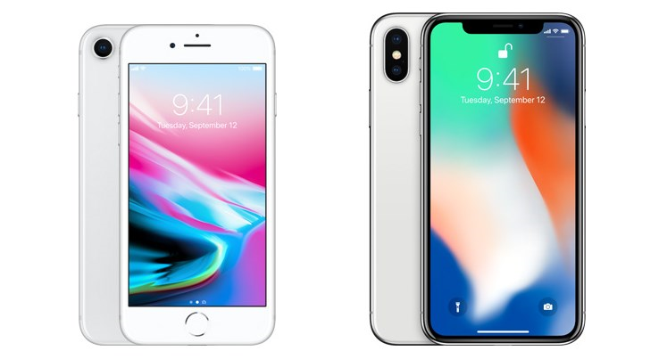

In the year 2017 the creaters of the iPhone came out with two new iPhones. The first iPhone that came out the iPhone 8 and the iPhone 8 Plus. The iPhone 8 and iPhone 8 Plus where released on September 22 2017. This iPhone has a glass body. This is also the first iPhone that allows you to charge your phone wireless. The iPhone 7 has a faster All processor. This chip is one of the most powerful and smartest chip in a smartphone at the time. It featers a CPU design that has two permormance cores and four efficiency cores. On the iPhone 8 Plus Apple has ugraded the camera. This camera is wider then the cameras have been in the past. The next iPhone that was released was the iPhone X also known as the iPhone 10. This was on of the biggest chance in the iPhone that apple has made. With the iPhone X they changed the screen so there is no more white along the border of your phone. However Alpple changed something about the iPhone that some people did not like and that was they removed the home button. The iPhone X is all glass just like the 8. This iPhone also has face ID which means you can unlock and download games by holding your phone infront of your face. The battery life has two more hours then the iPhone 7. The iPhone X was very different in exterior design then we have every seen for Apple. People around the world were excited for this iPhone decause of the new design. The iPhone X was a big step for Apple.
Source: Joy Taylor. iPhone 8 vs iPhone 10- Display Differences. 2020. imobie.com. (https://www.imobie.com/support/difference-between-iphone-8-and-x.htm)